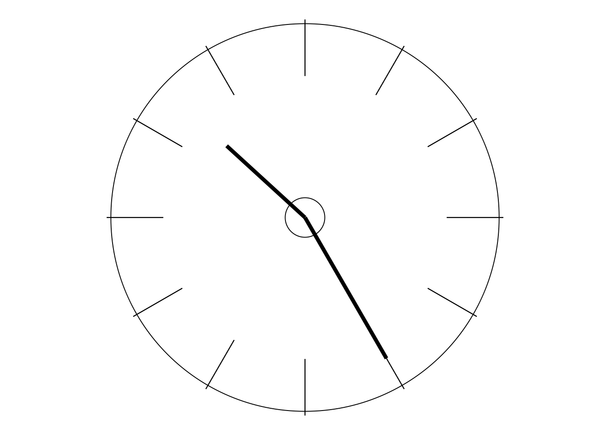

HELPFUL BOOKS AND VIDEOS
In that optional excursion into the Appendix to discuss the first paradox, I included a couple of recommendations of books which will be useful if at some stage you wish to learn more about control charts. And so this is an opportune time for me to also suggest some further reading along with video material which could be helpful in your learning about the more general main themes and content of this course.
The Deming Dimension
There is some detailed information about The Deming Dimension on pages 12–13 of the Welcome section in the “A. PLEASE START HERE” file.
For brevity I shall henceforth refer to The Deming Dimension simply as DemDim (as do many of the people that I know—I guess it’s a sort of “in-joke” since, whatever else he was, Dr Deming was most certainly not dim!).
DemDim has often been described as written in a “conversational style”. I hope and expect the same may be said of this course. The truth is that I feel incapable of writing in any other manner about this very human subject (unlike in the first half of my career life when my speciality was Mathematical Statistics!).
Again as with other courses, although there is no requirement for you to provide yourself with anything other than the prescribed text, naturally there are further books centred on Dr Deming’s work, plus other materials, especially videos, which could be helpful from time to time. So, particularly in case you have access to a library which could obtain such items for you to borrow, I’ll briefly introduce and describe some possibilities over the next couple of pages. There is detailed information on everything mentioned here and later in the “R. References and Sources” file.
Other books
As far as other books are concerned, I must of course begin with Dr Deming’s own famous Out of the Crisis (1986) and The New Economics for Industry, Government, Education (first published in 1993). However, neither book is really suitable for cover-to-cover reading by newcomers, although the reasons differ considerably between the two books.
Out of the Crisis is a hefty volume, and many people have found it quite difficult to cope with. So, as you will see from the Preface to DemDim, one of the purposes I had in writing my book was for it to serve as a preamble or a kind of “study-guide” for Out of the Crisis. I have long held the impression that Out of the Crisis was the book that Dr Deming never wanted to stop writing! However much he put into it, I think he always wanted to include more. It covers an amazingly diverse range of topics. So it really is too substantial a meal for the newcomer. However, that’s not to say that the newcomer couldn’t relish a choice from the menu!
The New Economics is quite different. It is much shorter, the language is simpler, and the book is generally better organised. I heard from more than one source that certain of Dr Deming’s close colleagues in America impressed on him the difficulties that some had found with Out of the Crisis. And, if I may suggest it, I believe he might have fallen into a trap which will be a big topic during the afternoon of Day 3: the danger of overcompensation! The New Economics is fantastically valuable for those who are, relatively speaking, already “in the know”. But the language is so simple, and important matters are treated so concisely, that there is substantial danger of the newcomer just skating over the surface and having no notion of the considerable depths that lie below that surface. As I have already indicated, Deming was brilliant at saying a lot in only few words, and that skill is nowhere better demonstrated than in this, his final, book.
As a result, one could set literally hundreds of essay questions on examination papers which quote just a single sentence from The New Economics followed by the word “Discuss.”!
But, although not being suitable for you to read straight through just yet, both books would of course be very helpful references during many of the activities in this course. For example, on Days 4 and 5 we shall be working with Deming’s famous “14 Points for Management”, and Chapter 2 in Out of the Crisis spends some 80 pages on those 14 Points. In fact, Out of the Crisis would prove to be an exceedingly useful reference throughout much of this course, while The New Economics would be a useful reference particularly during the second half of the course, and especially during the Second Project on Days 10 and 11.
I carried out some fairly important updates to DemDim in 1992, not long before The New Economics was first published, and I think there is little if any inconsistency between the relevant parts of that version of DemDim and Dr Deming’s final book. I could have gone through DemDim inserting lots of page references to The New Economics as I had already done for Out of the Crisis, but I felt that would have been unnecessarily pedantic because of The New Economics being so much shorter than Out of the Crisis and having a more straightforward structure. (Because of the importance of DemDim to this course, I should assure you that I have made no further revisions to its main content since 1992, and so you may be pretty confident that all page references to it and quotations from it will still be current in your copy!)
NB New editions of Out of the Crisis (Second Edition) and The New Economics (Third Edition) were published in 2018, both now including contributions from representatives of the Deming Institute. With both books, Dr Deming’s text is largely unchanged but a smaller size of print is used in the new editions, and so almost all page references have changed. Seeing that, at the time of writing and for some time to come, there are bound to be many more copies of the previous editions still in circulation, clearly I need to give you the page references for both editions. I’ll do this by using e.g. “page 114[164]” or similarly “pages 57–60[82–87]” where page 114 and pages 57–60 refer to the new edition and page 164 and pages 82–87 in square brackets refer to the previous edition. In case you forget which way round they are, the lower page number(s) always refer to the new edition.
However, in my early days of studying Dr Deming’s work, I also found it useful to enjoy some lighter read- ing—I am sure the relevant authors will not object to that description! I’ll mention the books that I particularly liked. The first to be published was Nancy Mann’s The Keys to Excellence (1985). Nancy’s organisation, Quality Enhancement Seminars, administered Dr Deming’s four-day seminars in the final years of his life. The Keys to Excellence was soon followed by Bill Scherkenbach’s The Deming Route to Quality and Productivity (1986); at that time, Bill was Director of Statistical Methods at the Ford Motor Company. In the same year came journalist Mary Walton’s The Deming Management Method. Bill’s book contains 14 chapters, one for each of Dr Deming’s 14 Points; Mary’s book also contains a chapter on each of the Points. All three of these books can easily be read cover-to-cover. Both of the latter two authors also produced a second book: Bill’s was Deming’s Road to Continual Improvement (1991) and Mary’s was Deming Management at Work (1989). Two other books I would commend are Rafael Aguayo’s Dr Deming—the Man Who Taught the Japanese About Quality (1990) and (at a rather deeper level—not for your first read) Deming’s Profound Changes by Ken Delavigne and Dan Robertson (1994).
And last, but definitely not least, here is by far the newest of all my recommendations: The Essential Deming, subtitled Leadership Principles from the Father of Quality. This remarkable treasure, faithfully collected and assembled by Dr Joyce Orsini, was published almost 20 years after Dr Deming died. But, apart from some brief introductions, it is all in his own words! Joyce painstakingly sifted through literally thousands of articles, speeches, notes, presentations, lectures, audiotapes, etc to produce this masterpiece. But, as she correctly indicates in her Preface, it is in no way a replacement for Out of the Crisis and The New Economics: it is instead “written for those people who wish to see more of what Deming had to say about management in this world we live in, beyond those two earlier books.” So, if you’ll be guided by me, do not get The Essential Deming until you have completed this course, but instead promise it to yourself as a constant companion in your lifelong learning which will then follow. By the end of the course you will have become sufficiently familiar with Dr Deming’s inimitable style of writing that The Essential Deming will then be both a more enjoyable read and a much greater help to your learning than previously. Those of us who were so fortunate as to know and work with Dr Deming can still hear him speaking the words in this book: for those not so fortunate, The Essential Deming is a superb substitute.
Videos
Regarding videos, there were two quite well-known short British-made TV documentaries: Doctor’s Orders (produced by Central ITV in 1988) and A Prophet Unheard (from the BBC in 1992). I often used part of Doctor’s Orders in my introductory seminars. A Prophet Unheard, which is a more “glitzy” production, is good in parts but, in my view, also contains some rather questionable sections.
Moving on to American material, the best-known set of relevant videos is The Deming Library. At the time of writing (2018) there are 32 titles, most of which were produced during the final six years of his life, though there have been a few later additions. The videos are generally around 25 minutes long.
However, my personal favourite amongst the American videos is The Deming of America. This video, which was made for PBS (America’s Public Broadcasting Service) in 1990 and 1991, i.e. around Dr Deming’s 90th birthday, is excellent. If you want to buy, or try to borrow through a library, a video on Dr Deming and his work, The Deming of America is my clear main recommendation. Having been filmed at that time, Dr Deming’s contributions to it are, of course, very representative of the nature and content of his teaching during the final years of his life. Also, unlike videos that come from some other sources, here he was given reasonable time and opportunity to make his points and emphases in ways that really can make an impact on viewers. What also helped was that its producer and interviewer, Priscilla Petty, showed some good understanding of Dr Deming’s work, a characteristic not shared by some of his other interviewers (and, if so, he certainly let them know it!). The video is also notable for the contributions made by many top Industrial leaders, demonstrating how important Dr Deming’s influence had been on them personally and to their companies. I shall quote from The Deming of America several times during this course.
Having recently checked on the internet, I cannot find Doctor’s Orders anywhere, but A Prophet Unheard is available. Also, both the Deming Library collection and The Deming of America are available from official distributors, the former from the Deming Institute (see page 4) and the latter from http://www.PriscillaPetty.com. As you’d expect from the quantity concerned, the Deming Library would burn rather a hole in your pocket but The Deming of America is not overly expensive for this excellent hour-long programme.
And finally…
If and when the time comes that you might like to learn more about the man as well as his message (for this final recommendation does both), treat yourself to The World of W Edwards Deming, the superb biography compiled and written by his faithful long-term secretary, the late Cecelia (Ceil) Kilian. This is where I discovered the various entries from his diary that I quote during this opening day of the course and also his extremely illuminating “Summary of Teachings to Top Management and to Engineers in Japan”, based on his work in that country in the summer of 1950—see today’s page 35.